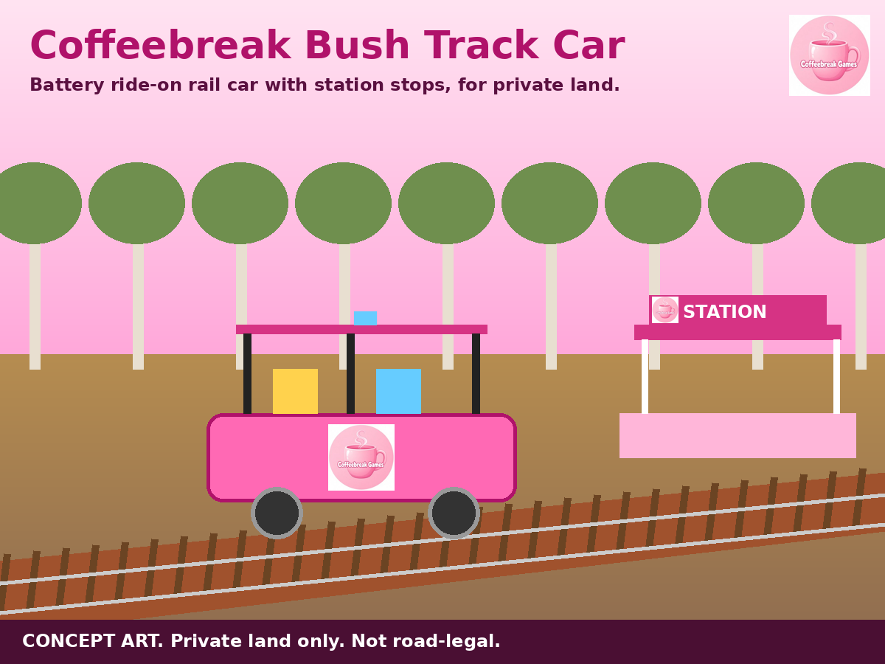
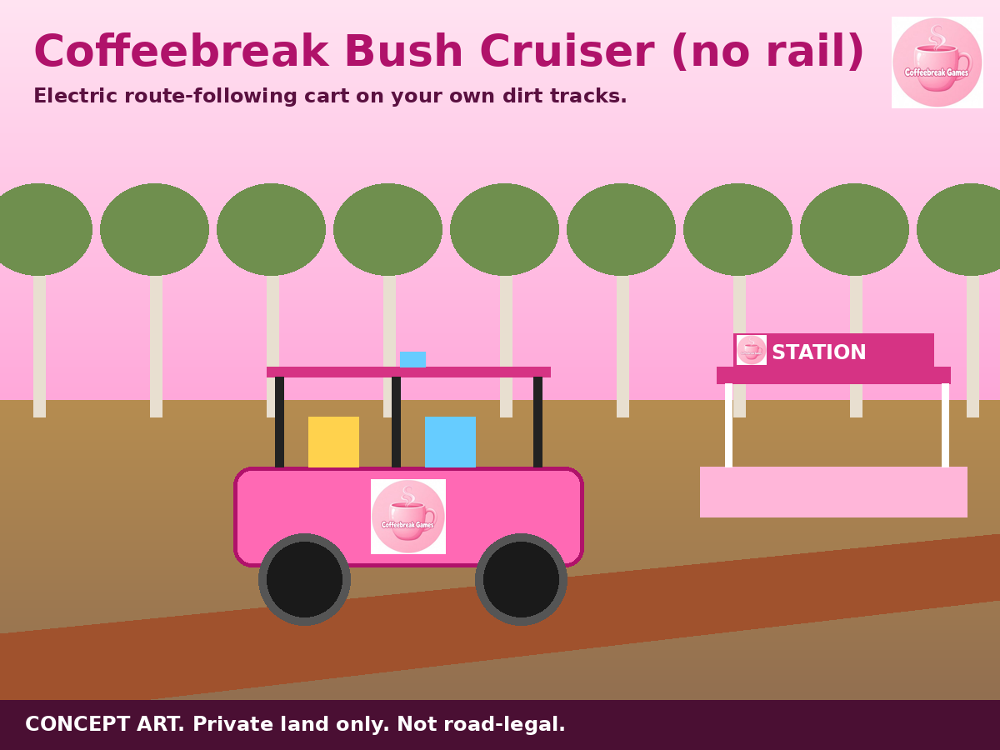

Coffeebreak Bush Cars for private land
For private land only, such as farms and bush properties. These are not road vehicles and are not road-legal. Installation is done by the supplier or a qualified installer. Pictures are concept artwork; you receive the supplier's own equipment.
Want to hire instead of buy? Jump to Hire
Try it first in the free game: Coffeebreak Bush Cruiser
1. Coffeebreak Bush Track Car (rail)

| Ride-on battery locomotive, 7 1/4 inch gauge (Ride On Railways, UK, Merlod ride-on locomotive, supplier price £6,552) | AU$26,900 |
| Track, per metre (2 aluminium 21 mm rails, The Miniature Railway Supply Co, supplier price £5.92 per metre of rail). Sleepers, fixings and ballast quoted on order | AU$49 / m |
| Station stop kit | Quoted on order |
- What the loco maker states: 2 x 1.1 HP DC motors, digital controller rated 180 amp, haulage 12 passengers, 8 or 12 mph top speed options, all metal chassis and cab, built to order with lead times up to 6 months
- Station stops: off-the-shelf station-stop controllers such as the RR Concepts StationMaster state that the train will "slow-down, pause and then accelerate" at each sensor, with pause time from 5 seconds to an hour. They are made for track-powered DC trains (4 or 10 amp). A battery ride-on loco needs the loco builder or a qualified installer to set up station stops, so this part is quoted on order.
- The train is driven by a person on board. Automatic station stops depend on the stop setup fitted.
2. Coffeebreak Bush Cruiser (no rail)

- What Burro states: "Burro will follow you while simultaneously recording GPS waypoints and/or visual cues/LiDAR inliers to remember the route", then it can run the route on its own
- Stores up to 5 routes, runs one-way or two-way between point A and point B, or in a loop, and can cycle routes automatically
- Burro says it uses AI to travel through tall weeds and branches, "stopping for real obstacles and people"
- 100% electric 4WD. It is a cargo robot that carries and tows loads (up to about 500 lb on the standard model). It is not made to carry passengers
Hire for your event
Coffeebreak Bush Train Hire (with track)
Coffeebreak organises your booking. The hire company delivers, sets up and runs everything on the day.
Ride-on miniature train rides on a real bush railway near Newcastle and Lake Macquarie. Your group gets sole use of a railway section with a picnic area, BBQs and toilets, and unlimited train rides. The trains run on the railway's own track, so the party is held there.
- Wednesday, 2 hours of train running: $675
- Sunday, 3 hours of train running: $900
- Extra train time, by arrangement: $225 per hour
- Includes up to 60 visitors (all adults and children, even if not riding). Extra visitors $11 each on Wednesday, $12 on Sunday
- Riders must wear fully enclosed shoes
Coffeebreak Trackless Train Hire
Coffeebreak organises your booking. The hire company delivers, sets up and runs everything on the day.
A trackless train comes to your party, school or event and drives around on grass or paths, no rails needed.
- Newcastle, Hunter Valley and Central Coast: from $525. Holds up to 12 passengers, comes with its own train station and a train driver. The hire company states it carries $20 million public liability insurance, its rides meet Australian Standard 3533, and its setup staff are trained
- Sydney: $2,700 for 4 hours (minimum booking). Holds 24 passengers. Needs parking for a 4WD and trailer, and room to turn clear of low branches and power lines
Planning something bigger: see Coffeebreak Theme Park Hire or a Coffeebreak Reptile Party
How to book
- Email your date, location, start time and hours to darkokaz@gmx.com
- Availability is confirmed with you by email before you pay anything
- Pay the confirmed amount by PayID to darkokaz@gmx.com with your name as the reference
- Your booking is then made with the hire company and you get confirmation by email
How to order (buying)
- Email darkokaz@gmx.com for your quote. Shipping and installation are quoted on order.
- Pay the agreed amount by PayID to darkokaz@gmx.com with your name as the reference
- Your equipment is ordered from the supplier after payment, and you get updates by email
Cube 3D Printer (AU$449) | Fashion Edition | Ring Edition | Music Edition | Theme Park Hire | Reptile Party